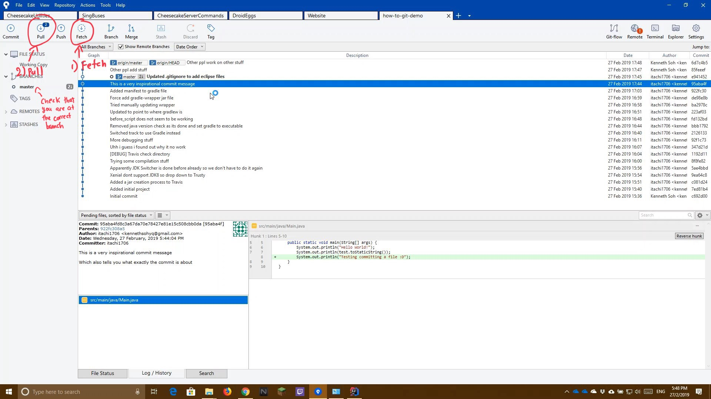

Update Local Project files from GitHub (git pull)
This file relates to both GitHub and GitLab.
The following guide shows you how to update your local repository with the latest changes from GitHub
- Click the Fetch button to ensure that all changes are fetched
- Ensure that you are at the correct branch you wish to pull changes from
- Click the Pull Button

- Double check that the remote and local branches match
(If it doesnt match, select the correct remote branch with the dropdown box)
- Press OK to confirm and pull new changes
Demo Video
The following is a video on how this is being done. Read the how-to guide before watching the video for actual steps to do it
Console Commands Used
git fetch origin # Fetch changes from GitHub
git pull # Pulls changes from GitHub